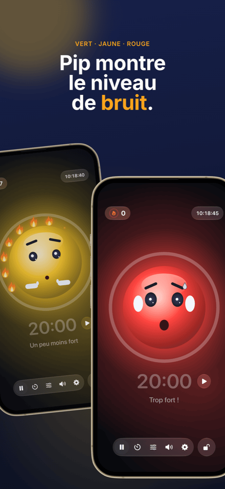

Gestion de classe : plan de classe, groupes et bruit sous contrôle
Une bonne gestion de classe se remarque à peine, et c’est précisément son but : la séance avance, les transitions se passent bien, et le temps sert à apprendre plutôt qu’à rappeler à l’ordre. Trois questions reviennent presque à chaque cours : qui est assis où ? Qui travaille avec qui ? Et quel niveau sonore est acceptable en ce moment ? Ce guide présente une méthode qui répond aux trois avant qu’elles ne deviennent un problème.
Ce que recouvre vraiment la gestion de classe
La gestion de classe, c’est plus que la discipline. Dès les années 1970, le psychologue américain Jacob Kounin a montré que les enseignants efficaces se distinguent moins par leur façon de réagir aux perturbations que par leur capacité à les prévenir. Parmi ses critères :
- Vigilance : la classe sent que vous avez toute la salle sous les yeux.
- Fluidité et rythme : les transitions entre les phases ne coûtent pas de minutes, et la séance garde son élan.
- Mobilisation du groupe : tout le monde reste impliqué, pas seulement l’élève interrogé.
Une grande partie relève de la posture et de l’expérience. Mais une partie est simplement de l’organisation, et celle-ci se prépare. C’est là qu’intervient la méthode qui suit.
Étape 1 · Une fois pour toutesCréer la liste de classe une fois, l’utiliser partout
La plus grande perte de temps, c’est de faire deux fois la même chose. Exportez votre liste de classe une seule fois en CSV depuis Excel, Numbers ou Google Sheets. Platzwahl comme Team Zufall importent directement ce fichier, et toute la classe est créée en quelques secondes. Les deux applis enregistrent les noms uniquement sur l’appareil, sans compte et sans cloud. Avec des données d’élèves, ce n’est pas un détail mais une condition.
Étape 2 · La fondationLe plan de classe : prévenir les perturbations avant qu’elles n’arrivent
Le placement des élèves est l’outil de gestion de classe le plus efficace, parce qu’il agit à chaque minute sans que vous ayez à dire un mot. Qui est assis à côté de qui décide des bavardages, de la distraction et de la concentration. Ce qui a fait ses preuves :
- Séparer les élèves agités, pas seulement côte à côte, mais aussi l’un derrière l’autre.
- Jouer sur la proximité : les élèves qui ont besoin d’aide ou décrochent vite sont assis dans votre champ de vision direct.
- Répartir des points d’ancrage calmes entre les élèves plus vifs.
- Changer régulièrement, par exemple après les vacances ou chaque mois, pour éviter que des coins à problèmes ne s’installent.
Avec Platzwahl, vous définissez ces règles pour chaque élève (risque de perturbation, place devant, voisins souhaités, séparations) et le plan est calculé automatiquement. Un score indique dans quelle mesure toutes les règles sont respectées. Le plan terminé part sur votre bureau en PDF.
 Étape 3 · Phases coopératives
Étape 3 · Phases coopératives
Des groupes équitables, sans discussion
« On peut choisir nos groupes ? » : c’est la question qui fait échouer bien des travaux de groupe avant même qu’ils commencent. Le libre choix prend du temps, renforce les clans et laisse toujours les mêmes de côté. La répartition ciblée est équitable, mais laborieuse, et ne vaut guère la peine pour dix minutes de travail en binôme.
Pour les nombreuses phases courtes, le hasard est la meilleure solution : il est rapide, personne ne se sent favorisé, et la classe apprend à travailler avec tout le monde. L’important, c’est que le tirage soit visible. Quand la classe voit les noms se mélanger au vidéoprojecteur, il n’y a plus rien à contester.
Dans Team Zufall, vous choisissez le nombre d’équipes, désélectionnez les absents d’un geste et lancez le tirage. Les équipes peuvent être projetées au mur ou exportées en PDF. Pour des projets plus longs où certaines combinaisons doivent être évitées, la répartition ciblée reste le meilleur choix.
 Étape 4 · Phase de travail
Étape 4 · Phase de travail
Rendre le bruit visible au lieu de faire « chut » en permanence
Le travail de groupe est bruyant, et c’est normal. Cela devient un problème quand plus personne ne sait à partir de quand c’est trop fort et que vous passez la séance à dire « chut ! ». Les rappels à l’ordre s’usent vite et interrompent justement ceux qui sont concentrés.
Trois choses fonctionnent mieux :
- Convenir du niveau sonore : fixez avec la classe ce qui vaut dans quelle phase. Chuchoter pendant le travail individuel, voix de binôme pendant le travail de groupe.
- Montrer le niveau sonore : un feu de bruit au vidéoprojecteur donne à la classe le retour que vous devriez sinon donner à voix haute.
- Récompenser le calme plutôt que punir le bruit : si le feu ne fait que passer au rouge et retirer quelque chose, il devient vite un moyen de pression, et quelques élèves bruyants deviennent les boucs émissaires de la classe. Un objectif commun que la classe peut atteindre fonctionne mieux.
C’est exactement ce pour quoi Ruhe a été conçu : une mascotte affiche vert, jaune ou rouge, et tant que le calme règne, une flamme s’allume après l’autre. Douze flammes forment une couronne complète, et on fête ça. Vous réglez les seuils du jaune et du rouge selon la phase, ou laissez Ruhe se calibrer seul. Un minuteur affiche le temps restant, la vue projecteur met tout en grand au mur, et les commandes restent sur votre iPad. Ruhe mesure uniquement le volume ; rien n’est enregistré.

Étape 5 · ClôtureRendre les réussites visibles
En fin de séance, ce qui compte, c’est ce qui a fonctionné. Une couronne de flammes complète est une bonne occasion de féliciter toute la classe. Et si ça n’a pas marché aujourd’hui, c’est l’occasion de chercher ensemble pourquoi, sans désigner de coupables. Des problèmes récurrents à certaines tables indiquent que le prochain plan de classe s’impose.
Une séance avec cette méthode
| Phase | Ce qui se passe | Outil |
|---|---|---|
| Avant la séance | Le plan de classe est affiché, chacun sait où s’asseoir. Pas de bousculade pour les places. | Platzwahl |
| Entrée | Phase collective dans la disposition fixe. | – |
| Transition | Les équipes sont tirées au sort au vidéoprojecteur, les absents sont désélectionnés. | Team Zufall |
| Phase de travail | Le feu de bruit et le minuteur tournent au vidéoprojecteur, la classe récolte des flammes. | Ruhe |
| Bilan | Retour aux places fixes, coup d’œil rapide à la couronne de flammes. | Ruhe |
Questions fréquentes
Que signifie la gestion de classe ?
La gestion de classe regroupe tout ce que fait un enseignant pour que le plus possible du temps de cours soit réellement du temps d’apprentissage : règles et routines, aménagement de la salle et plan de classe, transitions fluides et regard sur toute la classe. Il s’agit moins de réagir aux perturbations que de les empêcher d’apparaître.
Que faire quand la classe est constamment trop bruyante ?
D’abord convenir avec la classe du niveau sonore autorisé dans chaque phase. Ensuite rendre le volume visible au lieu de rappeler sans cesse à l’ordre, par exemple avec un feu de bruit au vidéoprojecteur. Le plus efficace est de valoriser les phases calmes plutôt que de seulement sanctionner le bruit.
Un feu de bruit en classe, est-ce une bonne idée ?
Oui, s’il est utilisé comme un objectif commun et non comme un outil de sanction. Les seuils doivent correspondre à la phase : le travail de groupe peut être plus bruyant que le travail individuel. Un feu qui récompense le calme au lieu de punir le bruit évite que quelques élèves bruyants deviennent les boucs émissaires de la classe.
Faut-il former les groupes au hasard ou de façon ciblée ?
Les deux ont leur place. Pour les phases courtes et fréquentes en binôme ou en groupe, le hasard est idéal : rapide, équitable et sans discussion sur qui travaille avec qui. Pour les projets plus longs ou les configurations délicates, la répartition ciblée vaut l’effort. Le plan de classe, lui, doit toujours être réfléchi.